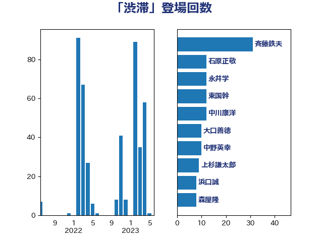

単語「渋滞」

| 大口善徳 | 公明党 | 21 回 |
| 浜口誠 | 国民民主党 | 12 回 |
| 赤羽一嘉 | 公明党 | 11 回 |
| 中野英幸 | 自由民主党 | 10 回 |
| 斉藤鉄夫 | 公明党 | 9 回 |
| 杉本和巳 | 日本維新の会 | 7 回 |
| 市村浩一郎 | 日本維新の会 | 6 回 |
| 森屋隆 | 立憲民主党 | 6 回 |
| 石原正敬 | 自由民主党 | 6 回 |
| 西野太亮 | 自由民主党 | 6 回 |
| 西銘恒三郎 | 自由民主党 | 6 回 |
| 日下正喜 | 公明党 | 5 回 |
| 中谷真一 | 自由民主党 | 4 回 |
| 伊波洋一 | 無所属 | 4 回 |
| 城井崇 | 立憲民主党 | 4 回 |
| 朝日健太郎 | 自由民主党 | 4 回 |
| 本庄知史 | 立憲民主党 | 4 回 |
| 梶山弘志 | 自由民主党 | 4 回 |
| 白石洋一 | 立憲民主党 | 4 回 |
| 竹内真二 | 公明党 | 4 回 |
| 近藤和也 | 立憲民主党 | 4 回 |
| 金子俊平 | 自由民主党 | 4 回 |
| 古川元久 | 国民民主党 | 3 回 |
| 大西健介 | 立憲民主党 | 3 回 |
| 平口洋 | 自由民主党 | 3 回 |
| 浅川義治 | 日本維新の会 | 3 回 |
| 空本誠喜 | 日本維新の会 | 3 回 |
| 道下大樹 | 立憲民主党 | 3 回 |
| 高橋千鶴子 | 日本共産党 | 3 回 |
| たがや亮 | れいわ新選組 | 2 回 |
| 古川直季 | 自由民主党 | 2 回 |
| 吉田宣弘 | 公明党 | 2 回 |
| 国定勇人 | 自由民主党 | 2 回 |
| 大西英男 | 自由民主党 | 2 回 |
| 大野敬太郎 | 自由民主党 | 2 回 |
| 杉久武 | 公明党 | 2 回 |
| 枝野幸男 | 立憲民主党 | 2 回 |
| 櫻井周 | 立憲民主党 | 2 回 |
| 櫻田義孝 | 自由民主党 | 2 回 |
| 水岡俊一 | 立憲民主党 | 2 回 |
| 浅野哲 | 国民民主党 | 2 回 |
| 清水真人 | 自由民主党 | 2 回 |
| 渡辺周 | 立憲民主党 | 2 回 |
| 稲富修二 | 立憲民主党 | 2 回 |
| 稲津久 | 公明党 | 2 回 |
| 美延映夫 | 日本維新の会 | 2 回 |
| 逢坂誠二 | 立憲民主党 | 2 回 |
| 金城泰邦 | 公明党 | 2 回 |
| 三木亨 | 自由民主党 | 1 回 |
| 中島克仁 | 立憲民主党 | 1 回 |
| 井上信治 | 自由民主党 | 1 回 |
| 今枝宗一郎 | 自由民主党 | 1 回 |
| 勝部賢志 | 立憲民主党 | 1 回 |
| 北神圭朗 | 無所属 | 1 回 |
| 土田慎 | 自由民主党 | 1 回 |
| 塩村あやか | 立憲民主党 | 1 回 |
| 室井邦彦 | 日本維新の会 | 1 回 |
| 小山展弘 | 立憲民主党 | 1 回 |
| 小里泰弘 | 自由民主党 | 1 回 |
| 岡本あき子 | 立憲民主党 | 1 回 |
| 岩田和親 | 自由民主党 | 1 回 |
| 岸真紀子 | 立憲民主党 | 1 回 |
| 工藤彰三 | 自由民主党 | 1 回 |
| 新垣邦男 | 立憲民主党 | 1 回 |
| 木村次郎 | 自由民主党 | 1 回 |
| 本田太郎 | 自由民主党 | 1 回 |
| 杉田水脈 | 自由民主党 | 1 回 |
| 東徹 | 日本維新の会 | 1 回 |
| 武井俊輔 | 自由民主党 | 1 回 |
| 河野太郎 | 自由民主党 | 1 回 |
| 田名部匡代 | 立憲民主党 | 1 回 |
| 礒崎哲史 | 国民民主党 | 1 回 |
| 福重隆浩 | 公明党 | 1 回 |
| 紙智子 | 日本共産党 | 1 回 |
| 若松謙維 | 公明党 | 1 回 |
| 荒井優 | 立憲民主党 | 1 回 |
| 赤嶺政賢 | 日本共産党 | 1 回 |
| 金子恭之 | 自由民主党 | 1 回 |
| 阿部司 | 日本維新の会 | 1 回 |
| 青山大人 | 立憲民主党 | 1 回 |
| 青木愛 | 立憲民主党 | 1 回 |